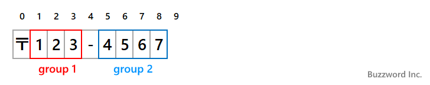
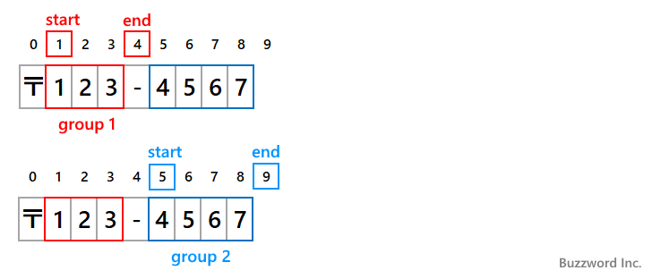

- Home ›
- Java入門 ›
- Java正規表現の使い方
正規表現グループを設定してパターンの一部にマッチした文字列を取得する
正規表現のパターンの中に正規表現グループ(キャプチャグループ)を設定することで、パターン全体にマッチした文字列とは別に、パターンの中の一部分にマッチした文字列を取得することができます。ここでは Java の正規表現で正規表現グループを利用する方法について解説します。
目次
正規表現グループを設定する
正規表現のパターンの中で正規表現グループを設定するには、設定したい部分を括弧()で囲んでください。
abc(def)ghi
ここで使用する括弧はグループ化の時に指定した括弧と同じものです。グループ化のためにパターンの一部を括弧で囲うと、正規表現グループもあわせて設定されます。
例えば次のパターンを見てください。
String regex = "\d{3}-\d{4}";
対象の文字列 "郵便番号は123-4567です" はこのパターンにマッチし、パターン全体がマッチする文字列は 123-4567 です。この時、パターンの中の \d{4} の部分にマッチした部分だけを取得するには正規表現グループを設定します。正規表現グループを設定するには、パターンの中の設定したい部分を括弧で囲います。
String regex = "\d{3}-(\d{4})";
グループ 1 は次の箇所に設定されました。
グループ 1 : \d{4}
これで文字列がパターンにマッチした時、パターン全体に対してマッチした文字列 123-4567 とは別に、正規表現グループの部分にマッチした 4567 を取得することができます。正規表現グループにマッチした文字列をキャプチャと呼ぶこともあり、また正規表現グループのことをキャプチャグループと呼ぶこともあります。
正規表現グループは 1 つのパターンの中に複数設定することができます。パターンの中の \d{3} の部分にマッチした部分も取得するために、もう一つ正規表現グループを設定しました。
String regex = "(\d{3})-(\d{4})";
グループ 1 および グループ 2 は次の箇所に設定されました。
グループ 1 : \d{3}
グループ 2 : \d{4}
複数の正規表現グループを設定した場合は、前から順番にグループ 1 、グループ 2 のようにインデックスが設定され、あとから正規表現グループのインデックスを指定してマッチした文字列を参照します。
なおグループのインデックスは、パターンを左から右へ見ていき、括弧の ( が出てきた順番にインデックスが割り当てられていきます。
正規表現グループでマッチした文字列を取得する
正規表現グループを設定したパターンを使用し、 find メソッドなどを実行してマッチに成功すると、正規表現グループ毎にマッチした文字列を参照することができます。参照を行うには Matcher クラスの group メソッドを使用します。
public String group(int group)
パラメータ:
group - この正規表現エンジンのパターンに指定されている前方参照を行う正規表現グループのインデックス
戻り値:
前回のマッチ時にグループによって前方参照された部分シーケンス(空の場合もある)。グループが入力の一部へのマッチに失敗した場合はnull
例外:
IllegalStateException - マッチがまだ試みられていない場合、または前回のマッチ操作が失敗した場合
IndexOutOfBoundsException - 指定されたインデックスを持つ前方参照を行う正規表現グループがそのパターンに含まれない場合
1 番目の引数にグループのインデックスを指定します。戻り値として指定したインデックスの正規表現グループでマッチした文字列が返されます。
なおインデックスに 0 を指定して group メソッドを実行すると、パターン全体とマッチした文字列が返されます。これは引数なしで group メソッドを呼び出したときの戻り値と同じです。(引数なしの group メソッドについては「パターンとマッチした部分文字列の情報を取得する(Matcher.start,Matcher.end,Matcher.group)」を参照してください)。
次のサンプルを見てください。
import java.util.regex.*;
class JSample13_1{
public static void main(String[] args){
String regex = "(\\d{3})-(\\d{4})";
Pattern p = Pattern.compile(regex);
Matcher m = p.matcher("〒123-4567");
if (m.find()){
System.out.println(m.group()); // 123-4567
System.out.println(m.group(0)); // 123-4567
System.out.println(m.group(1)); // 123
System.out.println(m.group(2)); // 4567
}
}
}
パターンに設定した正規表現グループ毎にマッチした文字列を取得することができました。

正規表現グループでキャプチャした最初の文字と最後の文字のインデックスを取得する
正規表現グループとマッチした文字列の最初の文字のインデックスと最後の文字のインデックスを取得することができます。インデックスの取得を行うには Matcher クラスの start メソッドと end メソッドを使用します。
public int start(int group)
パラメータ:
group - この正規表現エンジンのパターンに指定されている前方参照を行う正規表現グループのインデックス
戻り値:
グループによって前方参照された最初の文字のインデックス。マッチは成功したがグループ自体はどの部分にもマッチしなかった場合は-1
例外:
IllegalStateException - マッチがまだ試みられていない場合、または前回のマッチ操作が失敗した場合
IndexOutOfBoundsException - 指定されたインデックスを持つ前方参照を行う正規表現グループがそのパターンに含まれない場合
public int end(int group)
パラメータ:
group - この正規表現エンジンのパターンに指定されている前方参照を行う正規表現グループのインデックス
戻り値:
グループによって前方参照された最後の文字の後のオフセット。マッチは成功したがグループ自体はどの部分にもマッチしなかった場合は-1
例外:
IllegalStateException - マッチがまだ試みられていない場合、または前回のマッチ操作が失敗した場合
IndexOutOfBoundsException - 指定されたインデックスを持つ前方参照を行う正規表現グループがそのパターンに含まれない場合
どちらのメソッドも 1 番目の引数にグループのインデックスを指定します。戻り値として指定したインデックスの正規表現グループでマッチした文字列が最初の文字のインデックス、および最後の文字の次の文字のインデックスが返ります。
次のサンプルを見てください。
import java.util.regex.*;
class JSample13_2{
public static void main(String[] args){
String regex = "(\\d{3})-(\\d{4})";
Pattern p = Pattern.compile(regex);
Matcher m = p.matcher("〒123-4567");
if (m.find()){
System.out.println(m.group(1)); // 123
System.out.println(m.start(1)); // 1
System.out.println(m.end(1)); // 4
System.out.println(m.group(2)); // 4567
System.out.println(m.start(2)); // 5
System.out.println(m.end(2)); // 9
}
}
}
パターンに設定した正規表現グループ毎にマッチした文字列を取得し、マッチした部分のインデックスをそれぞれ取得しました。

パターンの中の正規表現グループ数を取得する
パターンに設定されている正規表現グループの数を取得するには Matcher クラスの groupCount メソッドを使用します。
public int groupCount()
戻り値:
この正規表現エンジンのパターンに指定されている前方参照を行う正規表現グループの数
戻り値として、パターンに設定されている正規表現グループの数を返します。
次のサンプルを見てください。
import java.util.regex.*;
class JSample13_3{
public static void main(String[] args){
String regex = "((\\d{3})-(\\d{4}))";
Pattern p = Pattern.compile(regex);
Matcher m = p.matcher("〒123-4567");
if (m.find()){
System.out.println(m.groupCount()); // 3
for (int i = 1; i <= m.groupCount(); i++){
System.out.println(m.group(i));
}
}
}
}
パターンに設定した正規表現グループの数を取得し、グループの数だけ正規表現グループとマッチした文字列を画面に出力しています。
マッチした文字列の取得を行わない正規表現グループを設定する
グループ化のために使用した括弧であってもパターンの中で括弧()で囲われると正規表現グループが設定されます。例えば選択のときのグループ化などです。
String regex = "A(Red|red)B";
マッチした文字列を取得する予定がない場合で、明示的に文字列の取得を行いたくない場合には括弧()の中の最初に ? を記述することでキャプチャを行わないキャプチャグループを設定できます。
(?:パターン)
「(」と「)」で囲う代わりに「(?:」と「)」で囲います。この書式で囲んだ場合はグループ化としての機能は同じですがキャプチャは行われません。例えば先ほどの選択のためのグループ化であれば次のように記述することでグループを記述したことによるマッチした文字列の取得を行いません。
String regex = "A(?Red|red)B";
マッチした文字列の取得が目的でないグループに対して使用すると便利です。
次のサンプルを見てください。
import java.util.regex.*;
class JSample13_4{
public static void main(String[] args){
String regex = "製品(?:Code|コード):([A-Z]{2})-(\\d{2})";
Pattern p = Pattern.compile(regex);
Matcher m = p.matcher("製品コード:AZ-07");
if (m.find()){
System.out.println(m.groupCount()); // 2
System.out.println(m.group(1)); // AZ
System.out.println(m.group(2)); // 07
}
}
}
パターンの中で括弧で囲まれた箇所は 3 箇所ありますが 1 つ目の括弧には ? が記述されているのでマッチした文字列の取得を行いません。その為、マッチした文字列の取得を行う正規表現グループの数は 2 となります。
先にマッチした値と同じ値にあとからマッチするパターン
パターンの中で正規表現グループを設定した場合、正規表現グループでマッチした値を同じパターン内から参照し、既にマッチした値と同じ値にマッチするようにパターンに記述することができます。
参照する場合は、インデックス 1 の正規表現グループでマッチした値を参照するには \1 、インデックス 2 の正規表現グループでマッチした値を参照するには \2 のようにパターン内に記述します。
String regex = "(ABC).*\\1";
この場合、 ABC から始まり、任意の文字が 0 回以上続いたあと、 1 番目のキャプチャグループでキャプチャした値と同じ値が続くパターンとなります。 1 番目のキャプチャグループでキャプチャした値は ABC なので /ABC.*ABC/ というパターンと同じです。
次のサンプルを見てください。
import java.util.regex.*;
class JSample13_5{
public static void main(String[] args){
String regex = "<(.+)>(.*)</\\1>";
Pattern p = Pattern.compile(regex);
Matcher m = p.matcher("AAA<div>BBB<span>CCC</span>DDD</div>EEE");
if (m.find()){
System.out.println(m.group(2)); // BBB<span>CCC</span>DDD
}
}
}
今回のサンプルでは最初に見つかったタグ(今回の場合は <div> )と同じ名前の閉じタグ(今回の場合は </div> )で囲まれた文字列にマッチしています。同じ名前の閉じタグを探すためにキャプチャした値を後から参照しています。
-- --
Java の正規表現で複数の文字列のいずれかにマッチするパターンを記述する方法について解説しました。
( Written by Tatsuo Ikura )

著者 / TATSUO IKURA
初心者～中級者の方を対象としたプログラミング方法や開発環境の構築の解説を行うサイトの運営を行っています。